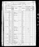
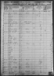
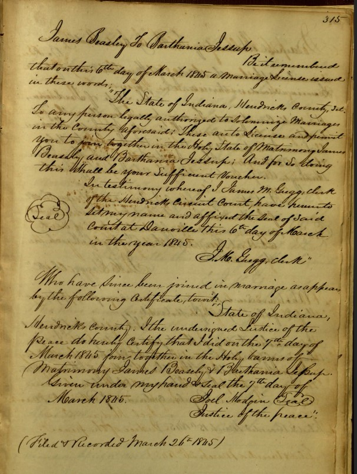
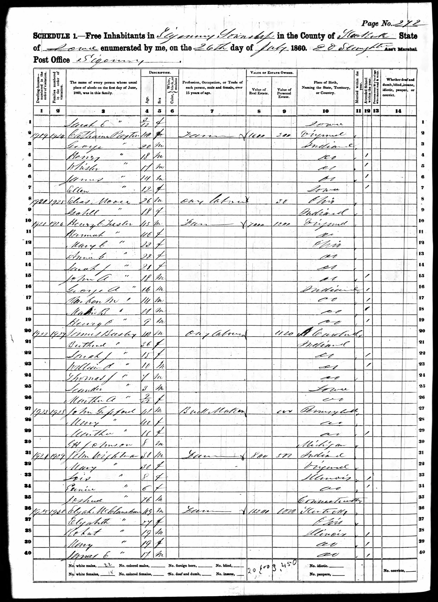
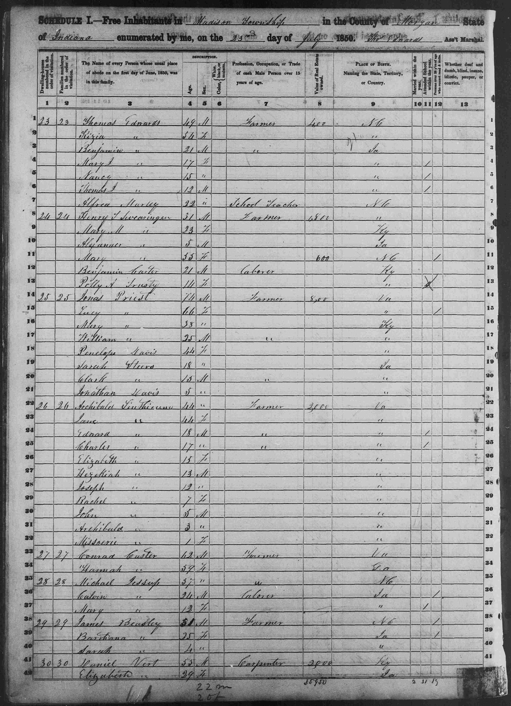

Beasley, James
| Birth Name | Beasley, James |
| Gender | male |
| Age at Death | about 52 years |
Events
| Event | Date | Place | Description | Sources |
|---|---|---|---|---|
| Census | 1850 | Madison, Morgan, Indiana, USA | 1a | |
|
|
||||
| Census | 1860 | Sigourney, Keokuk, Iowa, USA | 2a | |
|
|
||||
| Birth | about 1818 | North Carolina, USA | 2a | |
|
|
||||
| Census | 1870 | Lancaster, Keokuk, Iowa, USA | 2b | |
|
|
||||
| Death | between 1870 and 1880 | Head of household on 1870 census but Bertha is listed as widowed on 1880 census | 2c | |
|
|
||||
| Occupation | Day Laborer | 2a | ||
|
|
||||
Families
Family of Beasley, James and Jessup, Barthania |
|||||||||||||||
| Married | Wife | Jessup, Barthania ( * + ... ) | |||||||||||||
|
|||||||||||||||
| Children | |||||||||||||||
| Name | Birth Date | Death Date |
|---|---|---|
| Beasley, Martha Ann | 9/23/1857 | 8/20/1923 |
Media





Pedigree
-
- Beasley, James
Source References
-
Indiana Census
-
- Date: 1850
- Page: Noble, Indiana, United States records," images, FamilySearch (https://www.familysearch.org/ark:/61903/3:1:S3HT-67JS-QNN?view=explore : Jul 24, 2025), image 197 of 585; United States. National Archives and Records Administration. Image Group Number: 004192467
-
-
Iowa Census
-
- Page: The National Archives in Washington D.C.; Record Group: Records of the Bureau of the Census; Record Group Number: 29; Series Number: M653; Residence Date: 1860; Home in 1860: Sigourney, Keokuk, Iowa; Roll: M653_329; Page: 1008; Family History Library Film: 803329
-
Citation:
Source Citation
The National Archives in Washington D.C.; Record Group: Records of the Bureau of the Census; Record Group Number: 29; Series Number: M653; Residence Date: 1860; Home in 1860: Sigourney, Keokuk, Iowa; Roll: M653_329; Page: 1008; Family History Library Film: 803329Description
City: SigourneySource Information
Ancestry.com. 1860 United States Federal Census [database on-line]. Lehi, UT, USA: Ancestry.com Operations, Inc., 2009. Images reproduced by FamilySearch.
Original data:1860 U.S. census, population schedule. NARA microfilm publication M653, 1,438 rolls. Washington, D.C.: National Archives and Records Administration, n.d.
-
- Date: 1870
- Page: Year: 1870; Census Place: Lancaster, Keokuk, Iowa; Roll: M593_402; Page: 376A
-
Citation:
Source Citation
Year: 1870; Census Place: Lancaster, Keokuk, Iowa; Roll: M593_402; Page: 376ADescription
Township: LancasterSource Information
Ancestry.com. 1870 United States Federal Census [database on-line]. Lehi, UT, USA: Ancestry.com Operations, Inc., 2009. Images reproduced by FamilySearch.
Original data:1870 U.S. census, population schedules. NARA microfilm publication M593, 1,761 rolls. Washington, D.C.: National Archives and Records Administration, n.d.Minnesota census schedules for 1870. NARA microfilm publication T132, 13 rolls. Washington, D.C.: National Archives and Records Administration, n.d.
-
- Date: 1880
- Page: Year: 1880; Census Place: Sigourney, Keokuk, Iowa; Roll: 349; Page: 158c; Enumeration District: 157
-
Citation:
Source Citation
Year: 1880; Census Place: Sigourney, Keokuk, Iowa; Roll: 349; Page: 158c; Enumeration District: 157Description
Enumeration District: 157; Description: City of SigourneySource Information
Ancestry.com and The Church of Jesus Christ of Latter-day Saints. 1880 United States Federal Census [database on-line]. Lehi, UT, USA: Ancestry.com Operations Inc, 2010. 1880 U.S. Census Index provided by The Church of Jesus Christ of Latter-day Saints © Copyright 1999 Intellectual Reserve, Inc. All rights reserved. All use is subject to the limited use license and other terms and conditions applicable to this site.
Original data:Tenth Census of the United States, 1880. (NARA microfilm publication T9, 1,454 rolls). Records of the Bureau of the Census, Record Group 29. National Archives, Washington, D.C.
-
-
Online Users: Ancestry.com Photos from Other Users
-
- Page: FRANKIE_HUGHES27
-